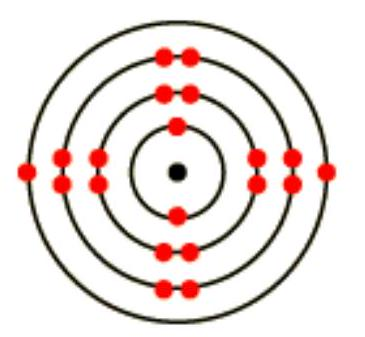

UNIT 1: INTRODUCTION TO PHYSICAL SCIENCE
Unit objectives
By the end of this unit, the learner should be able to;
- Define the various terms as relates to physical science
- Outline the structure of atoms for various elements
1.1 Definitions
- Physical Science: the study of the physical world, the natural world
- Chemistry: the study of the composition, properties and transformations of matter.
- Matter: anything that occupies space and has mass.
- Elements: basic building blocks of all other forms of matter.
- Atoms: small particles derived from one the elements. All matter can be described in terms of the interactions of atoms with each other.
- Molecules (compounds): combination of two or more atoms. Most common form for atoms.
1.2 Atomic Structure
All substances are made from atoms. There are just over one hundred different types of atom, called elements. Atoms can join together in millions of different combinations to make all the substances on Earth and beyond. Structure of the atom
Every atom is made of a nucleus consisting of protons and neutrons. The nucleus is surrounded by electrons. Protons and electrons are oppositely charged. Neutrons have no charge. This means the nucleus of an atom is always positively charged. An atom has a neutral overall charge because it has the same number of electrons as protons. Protons and neutrons have the same mass and accounts for nearly all of the mass of the atom. Electrons have such a small mass that this can usually be taken as zero. The atomic number (also called the proton number) is the number of protons in an atom. The mass number (also called the nucleon number) is the total number of protons and neutrons in an atom.
This information can be given simply in the form:
Atomic Number (Z) The # of protons
Mass Number (A) [The # of protons] + [the # of neutrons]
The number of neutrons in an atom can vary within small limits. For example, there are three kinds of carbon atom ${}^{12} \mathrm{C},{}^{13} \mathrm{C}$ and ${}^{14} \mathrm{C}$. They all have the same number of protons, but the number of neutrons varies.
| protons | Neutrons | mass number | |
|---|---|---|---|
| carbon-12 | 6 | 6 | 12 |
| carbon-13 | 6 | 7 | 13 |
| carbon-14 | 6 | 8 | 14 |
These different atoms of carbon are called isotopes. The fact that they have varying numbers of neutrons makes no difference whatsoever to the chemical reactions of the carbon.
Isotopes are atoms which have the same atomic number but different mass numbers. They have the same number of protons but different numbers of neutrons.
E.g. 2 Isotopes of chlorine
| Element | Protons | Electrons | Neutrons |
|---|---|---|---|
| ${}_{17}^{35} \mathrm{Cl}$ | 17 | 17 | $35-17=18$ |
| ${}_{17}^{37} \mathrm{Cl}$ | 17 | 17 | $37-17=20$ |
Comparing the charge and mass of electrons, protons and neutrons
| Particle | Charge | Mass |
|---|---|---|
| Proton | +1 | 1 |
| Neutron | 0 | 1 |
| Electron | -1 | 0.0005 (almost zero) |
The negatively charged electron is attracted to the positively charged nucleus by a Coulombic attraction. The protons and neutrons are held together in the nucleus by the strong nuclear force. These two forces hold the atom together.
1.3 Electronic Configuration
The electronic structure of an atom is a description of how the electrons are arranged. It can be shown as numbers or as a diagram.
Working out the number of electrons
Atoms are electrically neutral, and the 'positivity' of the protons is balanced by the 'negativity' of the electrons. It follows that in a neutral atom:
number of electrons = number of protons
So, if an oxygen atom (atomic number $=8$) has 8 protons, it must also have 8 electrons; if a chlorine atom (atomic number $=17$) has 17 protons, it must also have 17 electrons.
The arrangement of the electrons
The electrons are found at considerable distances from the nucleus in a series of levels called energy levels. Each energy level (or shell) can only hold a certain number of electrons. The first level (nearest the nucleus) will only hold 2 electrons, the second holds 8, and the third also seems to be full when it has 8 electrons. The pattern gets more complicated after the third level. (Find out more relating to the arrangement of electrons after the $3^{\text {rd }}$ level)
These levels can be thought of as getting progressively further from the nucleus. Electrons will always go into the lowest possible energy level (nearest the nucleus) - provided there is space.
To work out the electronic arrangement of an atom
- Look up the atomic number in the Periodic Table - making sure that you choose the right number if two numbers are given. The atomic number will always be the smaller one.
- This tells you the number of protons, and hence the number of electrons.
- Arrange the electrons in levels, always filling up an inner level before you go to an outer one.
E.g. to find the electronic arrangement in chlorine
- The Periodic Table gives you the atomic number of 17.
- Therefore there are 17 protons and 17 electrons.
- The arrangement of the electrons will be 2, 8, 7 (i.e. 2 in the first level, 8 in the second, and 7 in the third).
The electronic arrangements of the first 20 elements
Downloaded by Patrick Ngobiro (pngobiro@gmail.com)
| H 1 | He 2 | ||||||
| Li 2,1 | Be 2,2 | B 2,3 | C 2,4 | N 2,5 | O 2,6 | F 2,7 | Ne 2,8 |
| Na 2,8,1 | Mg 2,8,2 | Al 2,8,3 | Si 2,8,4 | P 2,8,5 | S 2,8,6 | Cl 2,8,7 | Ar 2,8,8 |
| K 2,8,8,1 | Ca 2,8,8,2 |
After this the pattern alters as you enter the transition series in the Periodic Table.
Two important generalizations
If you look at the patterns in this table:
- The number of electrons in the outer level is the same as the group number. (Except with helium which has only 2 electrons. The noble gases are also usually called group 0 - not group 8.) This pattern extends throughout the Periodic Table for the main groups (i.e. not including the transition elements).
So if you know that barium is in group 2, it has 2 electrons in its outer level; iodine (group 7) has 7 electrons in its outer level; lead (group 4) has 4 electrons in its outer level.
- Noble gases have full outer levels meaning they are stable elements.
[124IH]Electron configuration diagram for lithium
Take lithium for example. The diagram shows each energy shell as a circle around the nucleus, with each electron represented by a dot. In the exam, do not worry about coloring in the electrons. Just make them clear and ensure they are in the right place. Sometimes you will be asked to use a cross rather than a dot.
The electronic configuration for lithium is written as 2.1 (showing that lithium atoms have three electrons, two in the first shell and one in the second shell).
The table describes the electronic structures of four more elements.
Electronic structures of elements
| Element | Diagram | Numeric format | Electrons | Periodic table group |
|---|---|---|---|---|
| F | 2.7 | Fluorine atoms have nine electrons. Two of these fit into the first energy shell. The remaining seven fit into the second energy shell. | Group 7 | |
| Ne | 2.8 | Neon atoms have ten electrons. Two of these fit into the first energy shell. The remaining eight electrons fit into the second energy shell. Because its highest occupied energy shell is full, neon is stable and unreactive. | Group 0 (that is, the eighth group) | |
| Stable: Atoms are stable if their outer shell contains its maximum number of electrons. | ||||
| Na |  | 2.8.1 | Sodium atoms have 11 electrons. Two of these fit into the first energy shell, eight into the second energy shell. The last one fits into the third energy shell. | Group 1 |
| Ca | 2.8.8.2 | Two of these fit into the first energy shell, eight into the second energy shell, another eight into the third energy shell. The last two fit into the fourth energy shell. | ||
1.4 Atomic Spectra
When atoms are excited they emit light of certain wavelengths which correspond to different colors. The emitted light can be observed as a series of colored lines with dark spaces in between; this series of colored lines is called a line or atomic spectra. Each element produces a unique set of spectral lines. Since no two elements emit the same spectral lines, elements can be identified by their line spectrum.